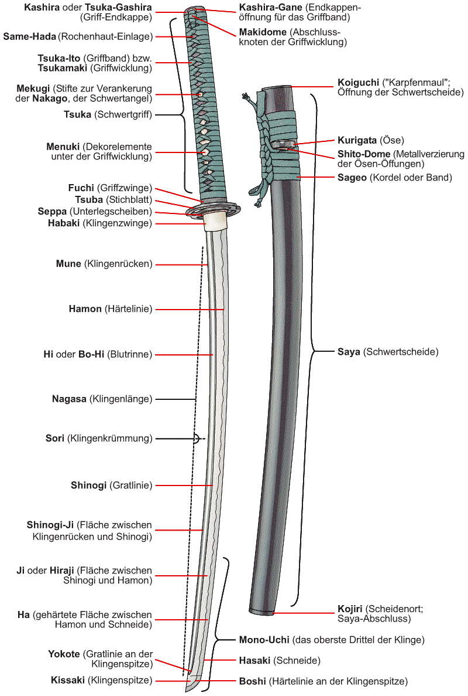

A katana (刀, かたな) is a Japanese sword characterized by a curved, single-edged blade with a circular or squared guard and long grip to accommodate two hands. Developed later than the tachi, it was used by samurai in feudal Japan and worn with the edge facing upward. Since the Muromachi period, many old tachi were cut from the root and shortened, and the blade at the root was crushed and converted into a katana.[4] The specific term for katana in Japan is uchigatana (打刀) and the term katana (刀) often refers to single-edged swords from around the world.[5]
